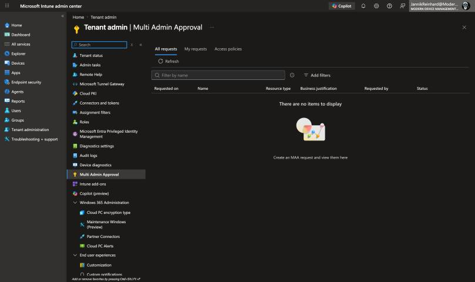
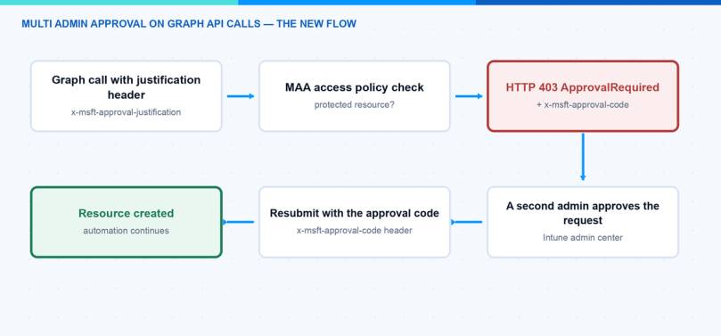
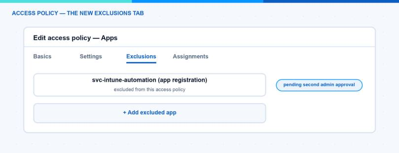

In June 2026 (week of June 22), Microsoft changed something that can break your automation overnight. Multi Admin Approval is now also enforced on Microsoft Graph API calls made with app-only tokens. Until now, only interactive (delegated) admin actions were intercepted. From now on, service principals, PowerShell scripts and third-party tools that change protected resources like apps or scripts are intercepted too. If they don’t handle the new approval flow, they fail with an HTTP 403 error. In this blog post I explain what changed, why your automation suddenly gets 403 errors, how the approval flow works for API calls, and how you can exclude your automation apps from the enforcement.
What Is Multi Admin Approval?
Multi Admin Approval (MAA) is a protection against compromised admin accounts. You create an access policy for a resource type, and from that moment every change to this resource type needs a second administrator to approve it. One admin submits the change with a business justification, a different admin approves or rejects it. An admin can never approve his own request — that also applies to Global Administrators.
Intune supports access policies for these resource types:
- Apps (app deployments, not app protection policies)
- Compliance policies
- Configuration policies (settings catalog)
- Device actions (wipe, retire, delete)
- Role-based access control
- Scripts (Windows PowerShell scripts)
- Tenant Configuration (device categories)
Changes to the access policies themselves are always protected as well, so this type is not selectable when you create a policy. You find everything under Tenant administration > Multi Admin Approval in the Intune admin center (intune.microsoft.com).

Note: The approver group must be a security group (no Microsoft 365 groups, no distribution lists), and this group must itself be assigned as a member group to an Intune role. If it is not, Intune periodically removes the members from the approver logic and your approvals silently stop working.
What Changed in June 2026?
Before this change, Multi Admin Approval only applied to interactive (delegated) admin actions. A script with an app-only token could create or change protected resources without any approval. That was a real gap, because a compromised app registration could bypass the whole protection.
Since the week of June 22, 2026, this gap is closed. Application-authenticated (app-auth) API calls through Microsoft Graph are now also intercepted by MAA when the target resource is protected by an access policy.
Important to know: this is opt-in per workload. Nothing changes if your tenant has no MAA access policies. The enforcement only applies to tenants that already configured access policies. It does not automatically enable MAA anywhere.
Also important: MAA only applies to operations that modify a protected resource (POST, PATCH, PUT, DELETE). Read-only GET requests are not affected.
Why Does My Automation Get a 403?
If your app calls Microsoft Graph with an app-only token and targets a protected resource, the call no longer goes through directly. Two things can happen:
- Without the required justification header, the request fails with an error that the
x-msft-approval-justificationheader is required. - With the justification header, the request still returns an HTTP 403, but with the error code
ApprovalRequired. This 403 is expected. It is not a permission problem. It is how MAA tells you that the request was received and is now waiting for approval.
So before you start rotating certificates or adding Graph permissions, check the error body. If you see ApprovalRequired, your permissions are fine — MAA is doing its job. If you want to decode other Intune and Graph error codes quickly, ErrorHunter (a tool I built) can help: errorhunter.msnugget.com. For a general approach to Intune errors, I also wrote the ultimate Intune troubleshooting guide.
How Does the Approval Flow Work for API Calls?
The flow for automation has four steps. All details are in the official documentation: Use Multi Admin Approval with the Microsoft Graph API.

- Submit the request with a justification header. Add the
x-msft-approval-justificationheader to your call. The value must be Base64-encoded. - Handle the 403 response. The response has the error code
ApprovalRequiredand contains anx-msft-approval-codeheader with a request ID. The same ID is also written into the error message text, which is easier to grab in PowerShell. Save this code. - Wait for approval. A different administrator must approve the request in the Intune admin center under Tenant administration > Multi Admin Approval > Received requests. Applications can’t approve or reject MAA requests. You can query the status with
GET /beta/deviceManagement/operationApprovalRequests?$filter=requestId eq '<code>'and wait until it isapproved(other values areneedsApproval,rejectedandcancelled). - Resubmit with the approval code. Send the original request again, but replace the justification header with the
x-msft-approval-codeheader. Now the request completes.
Here is a short PowerShell example for the whole flow:
# Step 1: send the change with a Base64-encoded business justification
$justification = [Convert]::ToBase64String([Text.Encoding]::UTF8.GetBytes("Deploy remediation script v2"))
$headers = @{ "x-msft-approval-justification" = $justification }
$uri = "https://graph.microsoft.com/beta/deviceManagement/deviceManagementScripts"
try {
Invoke-MgGraphRequest -Method POST -Headers $headers -Uri $uri `
-Body $body -ContentType "application/json"
}
catch {
# Step 2: a 403 with error code "ApprovalRequired" is expected with MAA.
# The request ID is in the x-msft-approval-code response header and the message text.
$message = $_.ErrorDetails.Message
$approvalCode = [regex]::Match($message, '[0-9a-f\-]{36}').Value
}
# Step 3: poll until another admin approved the request
$status = (Invoke-MgGraphRequest -Method GET -Uri `
"https://graph.microsoft.com/beta/deviceManagement/operationApprovalRequests?`$filter=requestId eq '$approvalCode'").value.status
# Step 4: resubmit with the approval code instead of the justification
if ($status -eq "approved") {
Invoke-MgGraphRequest -Method POST -Uri $uri -Body $body -ContentType "application/json" `
-Headers @{ "x-msft-approval-code" = $approvalCode }
}
Note: Intune sends no notification when a new request is waiting. For urgent changes, ping an approver directly. And don’t wait too long: a request that isn’t processed further within 3 days expires and must be resubmitted.
Hint: This flow needs a human in the loop. A fully unattended pipeline can’t approve itself. So for pure automation, the exclusion described in the next section is often the more realistic option.
How Do I Exclude My Automation App?
If you can’t update your application right away, Microsoft added a new Exclusions tab to the access policy. With it you can exclude specific applications from the Multi Admin Approval enforcement.

The steps are simple:
- Go to Tenant administration > Multi Admin Approval > Access policies.
- Edit the access policy for the workload your app calls.
- Add the application on the Exclusions tab.
- A second administrator must approve this change before the exclusion takes effect.
Note: Exclusions only apply to app-auth calls made by the excluded service principal. Interactive admin actions on the same resources still require approval. So the protection for humans stays fully in place.
What Do I Recommend?
This is what I would do in a tenant with MAA access policies:
- Inventory your automation first. Find every script, pipeline, and third-party tool that writes to apps, scripts, or policies with an app-only token. The Intune audit log records MAA events like approve, block, pass, and exclusion add/remove, so you can see which app-auth calls are hitting MAA.
- Decide per app. For tools where a human review makes sense, implement the justification and approval-code flow. For trusted, unattended automation (packaging pipelines, service accounts), use the Exclusions tab.
- Keep the exclusion list small. Every excluded app is a bypass of MAA. Treat these app registrations like privileged accounts and protect their credentials well.
- Be careful with the Role policy type. An access policy for role-based access control protects all role changes — including the RBAC assignments that MAA itself needs. You can lock yourself into a deadlock. If that happens: delete the Role access policy, wait a few minutes, fix the role assignments under Tenant administration > Roles, and recreate the policy afterwards. My advice: configure and verify all other access policies first, and enable the Role policy type last.
- Don’t turn off Multi Admin Approval just because automation broke. The 403 is annoying for a day, but the protection is worth it.
In this blog post I showed you why Multi Admin Approval now breaks Graph automation with 403 errors, how the new approval flow for API calls works, and how the Exclusions tab helps for service accounts. I hope this is a little help.
Stay healthy, Cheers Jannik